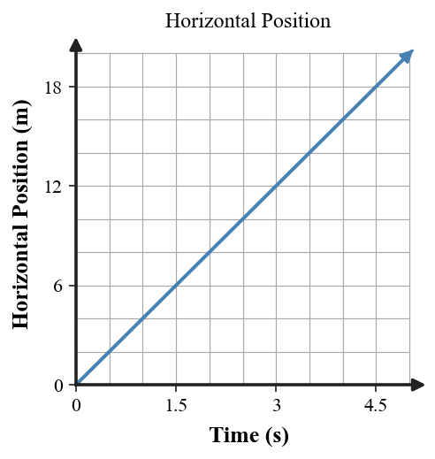
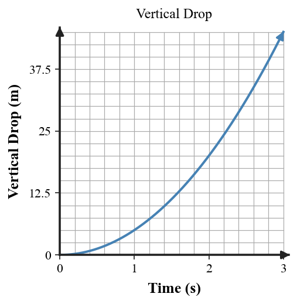

Practice focus: Model projectile motion by separating horizontal and vertical components of motion.
Define a projectile after it has left the launcher or thrower.
Ignoring air resistance, which force acts on a projectile after launch?
Ignoring air resistance, what happens to a projectile's horizontal velocity?
What happens to a projectile's vertical velocity as gravity acts?
Projectile motion combines horizontal __________ velocity with vertical accelerated motion.
Identify the horizontal velocity arrows in the projectile diagram.
Identify the vertical velocity arrows in the projectile diagram.
A ball is dropped from a table while another is launched horizontally. Which has the same vertical acceleration?
A projectile path curves downward because which component of motion is accelerating?
Classify a soccer ball after it leaves a player's foot as a projectile or not a projectile.
A rocket still firing its engine is or is not modeled as a simple projectile? Choose one.
On the horizontal-position graph, what does the straight line indicate about horizontal velocity?

A ball leaves a table horizontally at 3 m/s and is in the air for 2 s. Use $x=v_xt$ to determine horizontal distance.
A horizontally launched ball is in the air for 2 s. Use $y=\frac12gt^2$ with $g=10\,\text{m/s}^2$ to determine how far it falls.
A projectile has $v_x=6$ m/s for 3 s. Determine horizontal displacement.
A ball falls for 1.5 s. Determine its vertical drop using $g=10\,\text{m/s}^2$.
Use the component diagram to state which velocity component remains constant and which changes.
A flawed diagram shows shrinking horizontal arrows. Identify the error and state how the arrows should look.
Use the two graphs to compare the shape of horizontal position versus time with vertical drop versus time.

A ball is dropped and another is launched horizontally from the same height at the same instant. Predict which lands first, ignoring air resistance.
A projectile travels 15 m horizontally in 3 s. Determine its horizontal velocity.
A projectile falls 20 m from rest vertically. Use $y=\frac12gt^2$ with $g=10\,\text{m/s}^2$ to determine the fall time.
A ball has horizontal velocity 4 m/s for 2.5 s. Determine horizontal distance and state what gravity changes during that time.
On the vertical-drop graph, compare the distance gained from 0–1 s with 2–3 s. Which interval has the larger change?
A student says a forward force keeps a projectile moving after launch. Correct the explanation using inertia, gravity, and horizontal/vertical components.
A model shows horizontal velocity arrows shrinking while air resistance is ignored. Critique the model and describe a corrected vector pattern.
Explain why a dropped ball and a horizontally launched ball from the same height can hit the ground at the same time.
Use both position graphs to explain how a projectile can have constant horizontal velocity while its vertical motion accelerates.
A student claims, “A projectile falls because its forward force runs out.” Evaluate the claim and build a complete corrected model using inertia, gravity, horizontal velocity, and vertical acceleration.
A ball rolls off a table and must land on a target. Design a prediction method: identify the measurements needed, the relationships $x=v_xt$ and $y=\frac12gt^2$, and how the horizontal and vertical calculations work together.